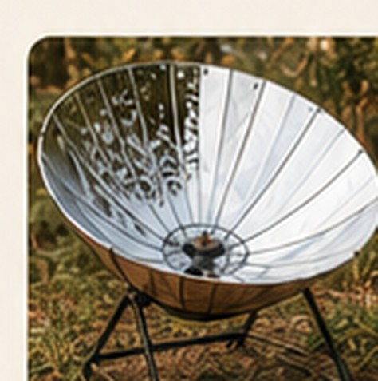
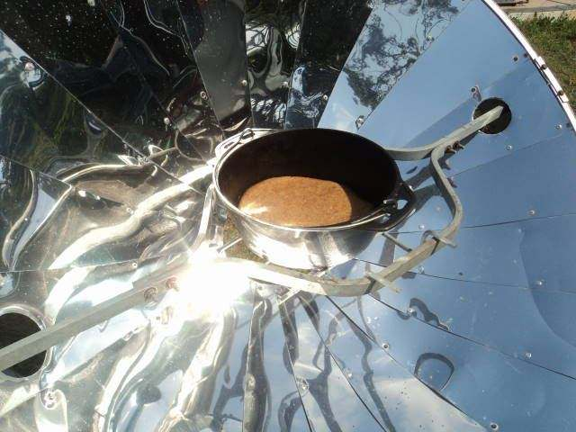
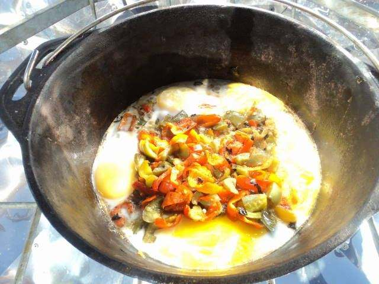
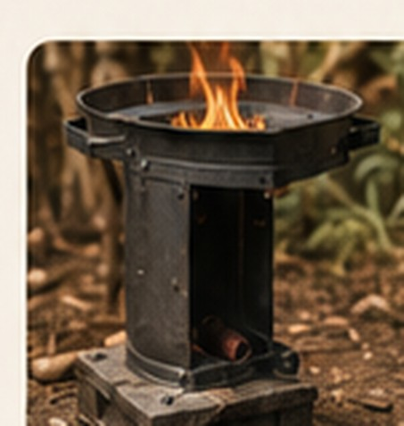
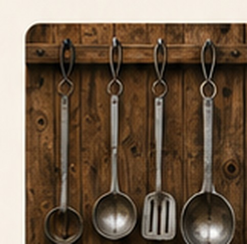
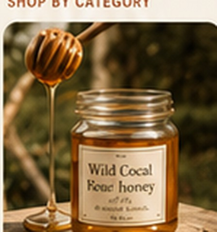
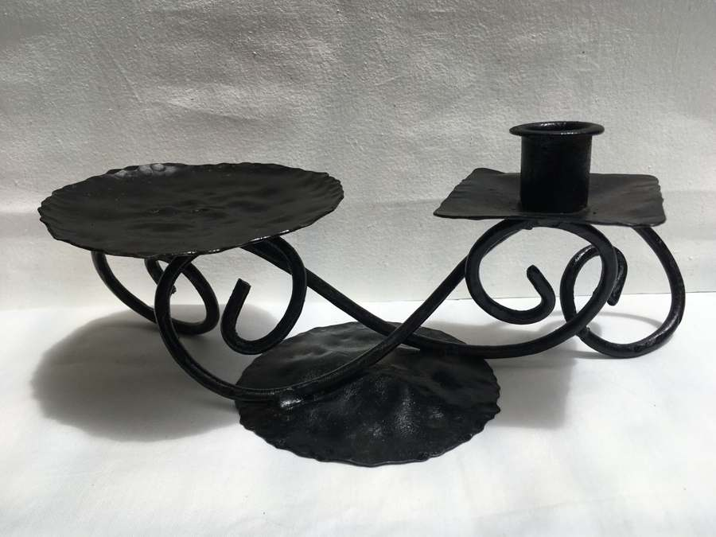
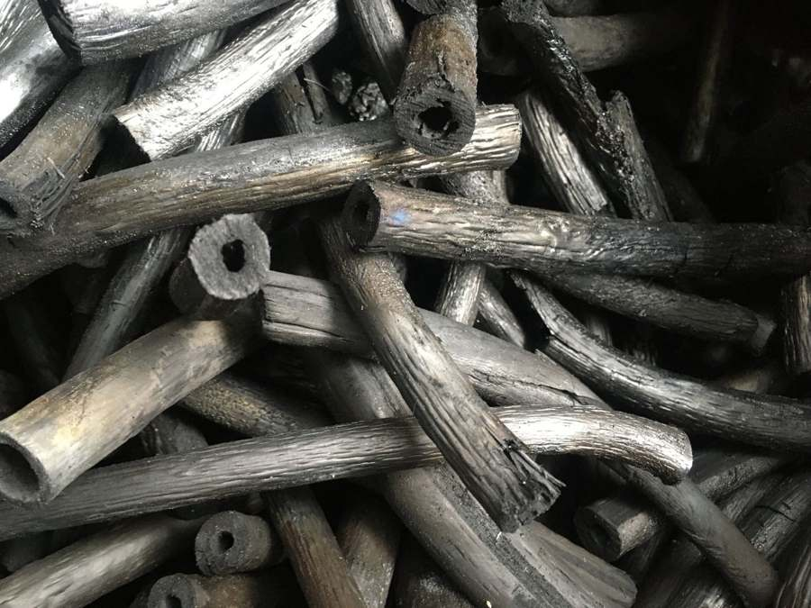
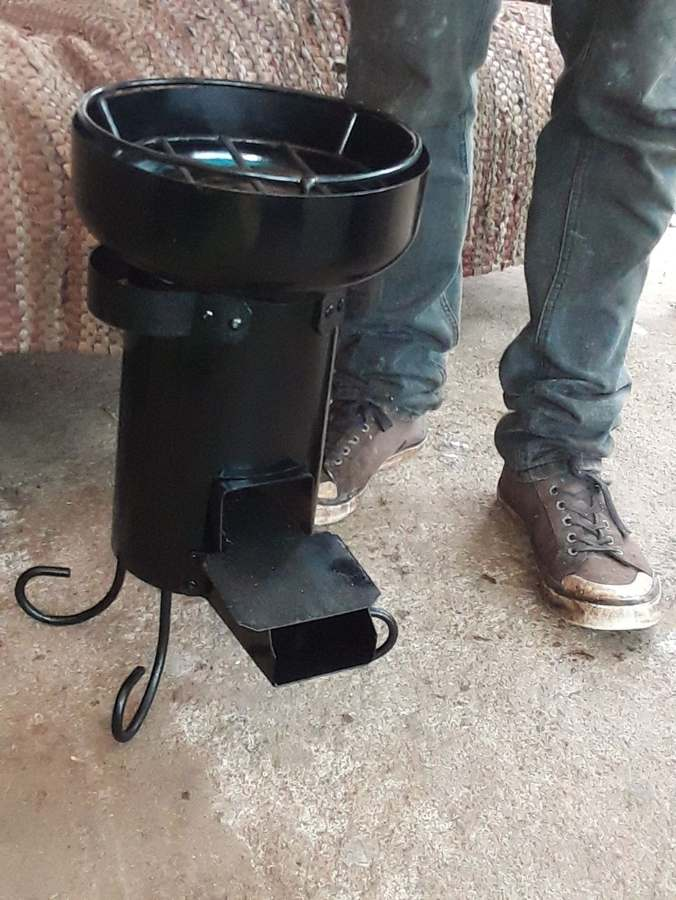

PRACTICALOlympus Flower Solar Cooker
Ray
Practical cooking tools built to help people live simply, cook sustainably and make good use of local resources.




PRACTICALRay

HANDMADERay

HAND-FORGEDFriends & Makers

LOCALThe Family Farm
Each cooker and stove is designed around useful, real-world cooking. The emphasis is simple: durable materials, efficient use and products that earn their place.
Less dependence on purchased fuel.
Every piece is handmade with attention.
Local making strengthens communities.
We work with people we know and trust.



